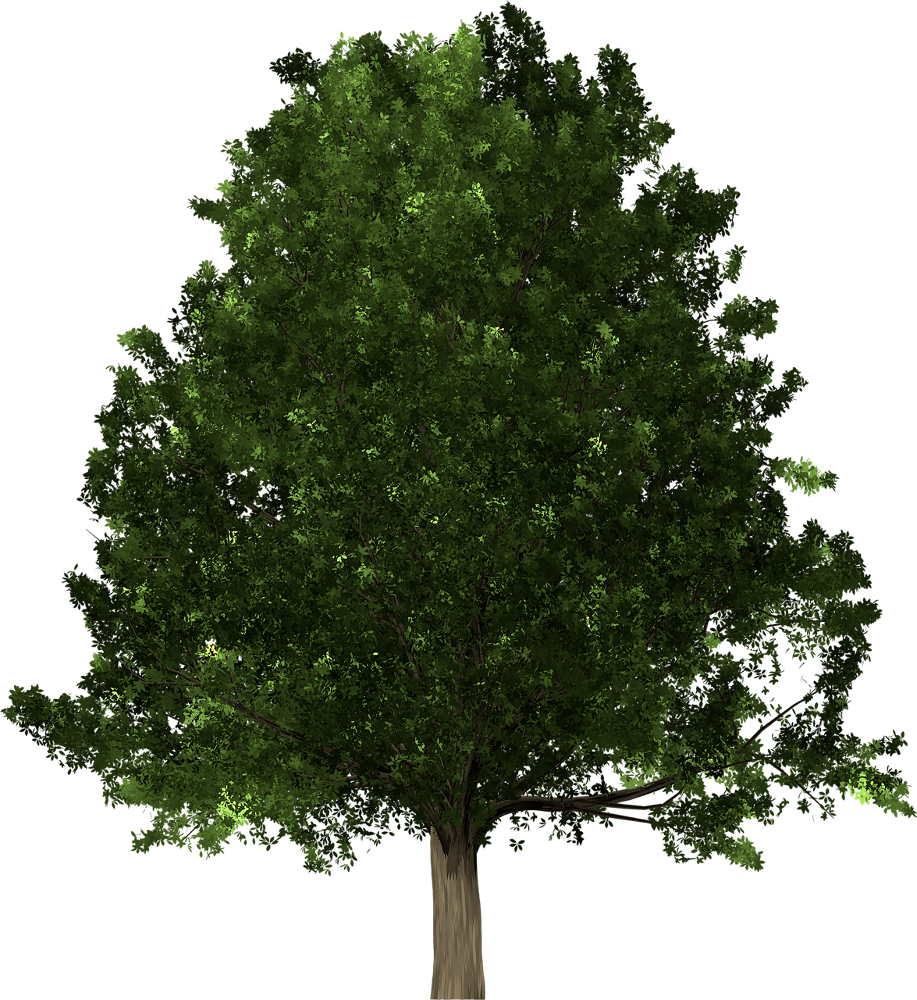

Clarify before coding
RFC before codeI start from the user problem, the edge cases and one measurable success metric — then write a one-page RFC so scope, non-goals and risks are agreed before code exists.
THE LAST PAGE
8 years, 5 teams, one craft — from ERP halls to AI-assisted delivery. The next chapter is open.
Say hello — write it with me ↗I start from the user problem, the edge cases and one measurable success metric — then write a one-page RFC so scope, non-goals and risks are agreed before code exists.
One agreed RFC becomes tickets sized to land in a day — riskiest first. Anything that smells like two features in one gets split before it touches the board.
Cursor and Claude Code type the boilerplate; the data model, API contract and access rules stay mine. Every PR lands small, reviewed and behind a named contract.
“Done” means the code showed me it works: CI gates green, evals for anything a model decides, and a fault drill — kill a dependency on purpose, watch it fail safely.
Rollout is part of the work: canary traffic first, SLOs and error budget on the dashboard, rollback rehearsed — so shipping stays boring on purpose.
Final page — say hi
An old oak holds my coordinates — every branch carries a page. Pull one down and say hello.

Full Stack Developer — Islamabad, Pakistan
Say hello — write me a letter ✍